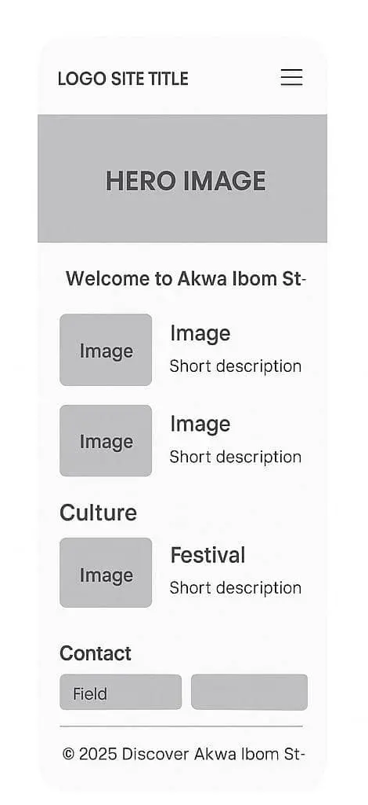
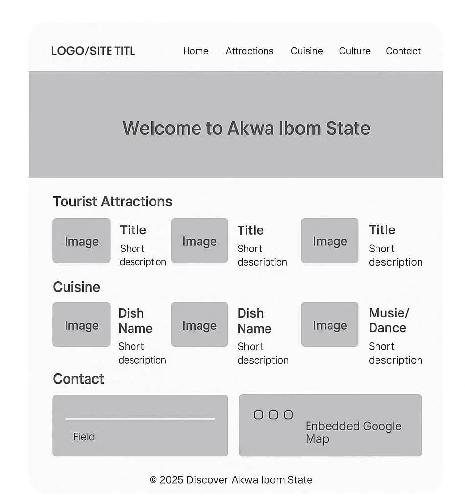

Site Name
Discover Akwa Ibom State, Nigeria -Chosen because it clearly reflects the purpose — to showcase the beauty, culture, and opportunities in Akwa Ibom State..
Site Purpose
The website will provide visitors with:
Scenarios
- “I’m a tourist visiting Nigeria — what are the top places to visit in Akwa Ibom?”
- “I’m a food lover — where can I try authentic Akwa Ibom dishes?”
Color Scheme
Main Colors:
- Green (#006400) – primary color for headers, buttons, and accents (represents Nigeria).
- Gold (#FFD700) – secondary color for highlights, section titles, and call-to-action elements.
Typography
Main Font: 'Poppins', sans-serif - The site plan uses these fonts consistently in section titles and example text blocks..
Wireframes
Mobile View:
Desktop View:
